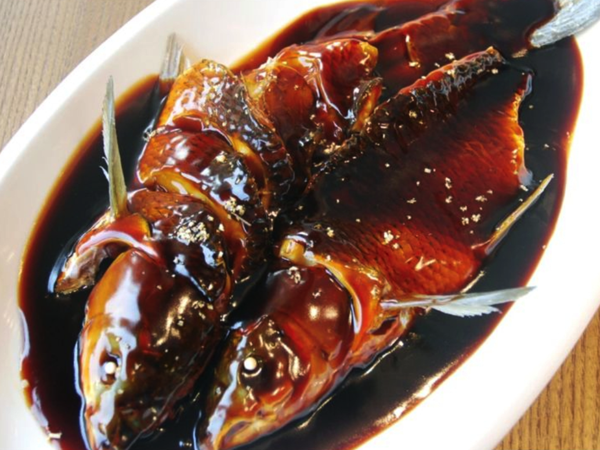
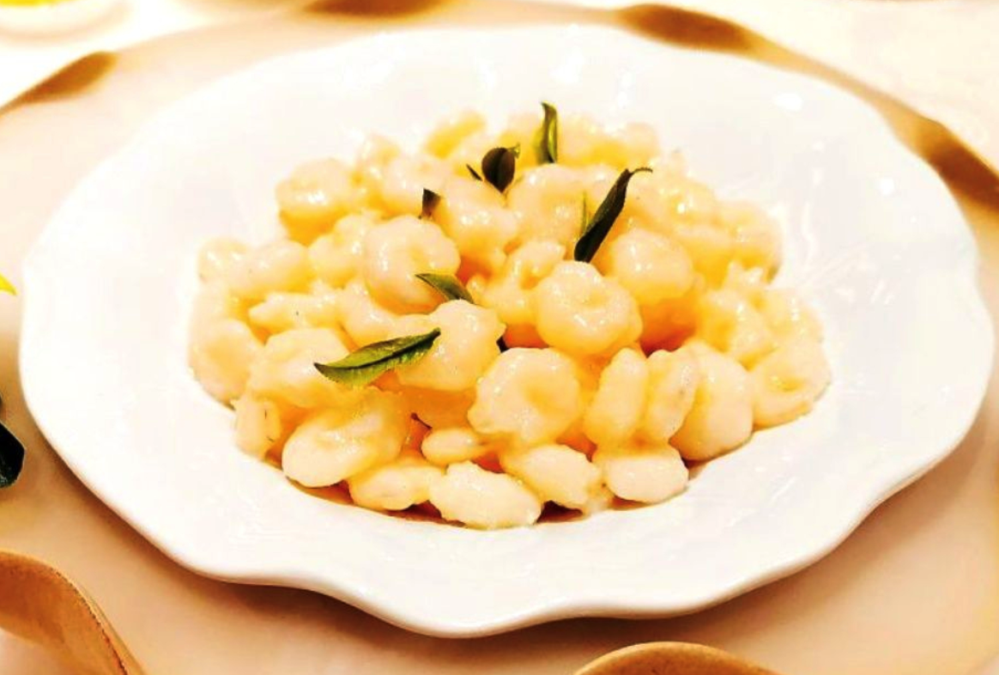
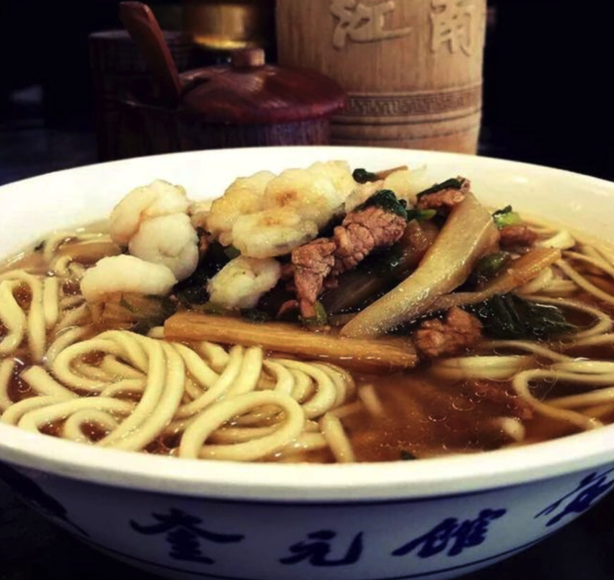
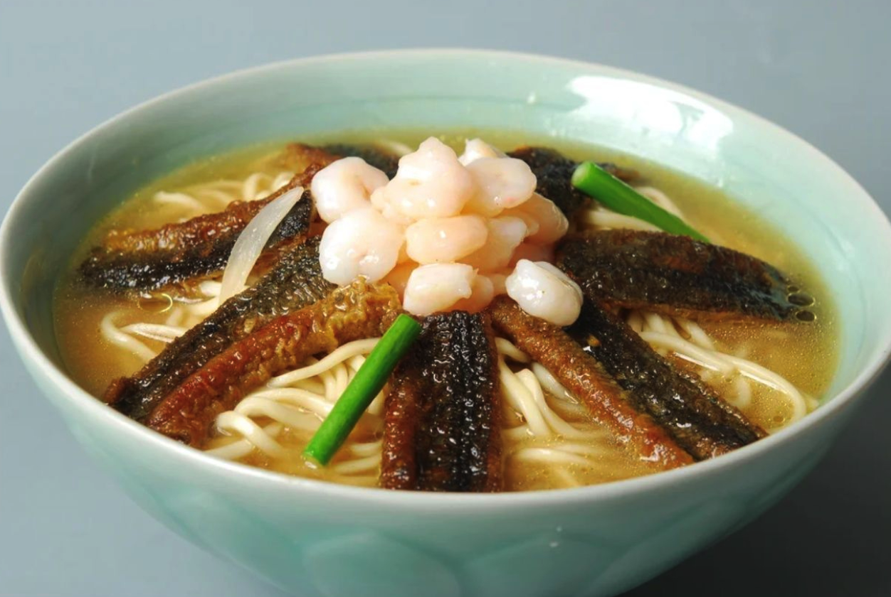

特色美食
-

西湖醋鱼
“西湖醋鱼（West Lake Fish in Vinegar Gravy），又名“叔嫂传珍”“宋嫂鱼”，前身为“宋嫂鱼羹”，是中国浙江省杭州市传统风味名菜，为浙江菜系。西湖醋鱼主以草鱼等食材用料烹制，色泽红亮，肉质鲜嫩，酸甜清香，口感软嫩，带有蟹味。2018年9月10日，西湖醋鱼被评为浙江省十大经典名菜之一。
-

龙井虾仁
相传，乾隆皇帝微服私访，在杭州茶农家喝到一杯龙井新茶，深感清香可口，趁人不备，暗抓了些茶叶离去，后来在市内餐馆用膳，叫店伙计用此泡茶。店伙计看到乾隆内着的龙袍外露一角，急忙告诉店主。店主正值烹调虾仁，惊慌中竟把店伙计手中的茶叶当作葱末撒到锅内。 想不到这道茶叶虾仁色泽雅丽， 滋味独特，吃得乾隆点头称好。 此后，这道菜肴便成了杭州名菜而流传至今
-

片儿川面
相传片儿川面，还是奎元馆初创时小面店的看家面，传说是清时某年浙江举行乡试到杭州来赶考的读书人很多，各地考生齐集杭城，店主为招徕这些读书人的生意，就以倒笃菜、笋片、猪肉片烧制成的大众化面专门供应外地书生。在所售之早餐面中添加三只蛋，寓“连中三元”之意。时有一书生因奎元馆面好价廉，常来吃面，后得中乡试举人第一名“解元”，放榜之日，特到店里向店主致谢，因小面店尚没有招牌，就当场题写“奎元馆”三字作为招牌。
-

虾爆鳝面
“虾爆鳝面是浙江省杭州市的一道特色名菜，属于浙菜系；该菜品在烹调时，应选用粗壮的鲜活黄鳝，斩头截尾剔骨后切成鳝片，用素油爆，荤油炒，麻油浇，直至鳝片黄脆；取鲜活大河虾洗净加蛋清上浆清炒至白嫩；精制面条下锅烧后，不粘不糊；用原汁煮面，使面条吸入鳝鱼的香味，汁浓面鲜。 虾爆鳝面为奎元馆的杭式名面。